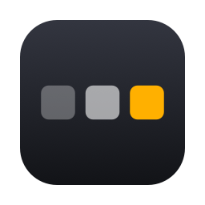

Slide
Your menu bar, on a carousel. Every icon one click away, even the ones behind the notch.
macOS 14 or later · Apple silicon and Intel · Open source
Try it: click the three slots, or the arrows.
Three ways to turn it
Click
Click the Slide icon and the bar turns one slot. The next hidden icon slides into view.
Hold and scroll
Hold Control-Option and click or scroll anywhere on the menu bar. One slot per click, one slot per notch, either way.
Page
The arrows turn a whole screen at once, so you flip through a crowded bar a page at a time.
Why a carousel
macOS drops menu bar icons that do not fit, and on a MacBook the notch takes a big bite of the bar. Other tools make you sort icons into hidden sections, then open a section to find one. Slide skips the sorting: your icons form a ring and the bar shows as many as fit. Every icon stays a real menu bar icon, in a real slot, working exactly as it always has.
How it compares
| Reaching a hidden icon | Permissions | Price | |
|---|---|---|---|
| Slide | Turn the bar until it slides into view | Accessibility | Free, or support it on the App Store |
| Bartender | Open a hidden section or second bar | Accessibility, Screen Recording | Paid |
| Ice, Thaw | Open a hidden section or panel | Accessibility, Screen Recording | Free |
| Hidden Bar | Toggle a divider | None | Free; no notch handling |
Questions
macOS says it cannot open Slide.
Slide is not notarized by Apple yet. Open System Settings, go to Privacy & Security, and click Open Anyway next to Slide. You only do this once.
Why does it need Accessibility access?
To read where your menu bar icons are and to move them, the same Command-drag you could do by hand. Slide asks for nothing else: no Screen Recording, no network access, no analytics.
Does it work with Bartender or Ice?
They move the same icons, so the two would fight. Slide warns you at launch if one is running. Use one or the other.
Where does Slide keep its icons?
At the right end of the bar, beside Control Center, where the notch never reaches. Right-click either icon for the menu, and switch off the page arrows there if you do not want them.
Why is there an App Store version if it is free?
The download is free forever. The App Store version will be the same app, for anyone who wants automatic updates or to chip in.